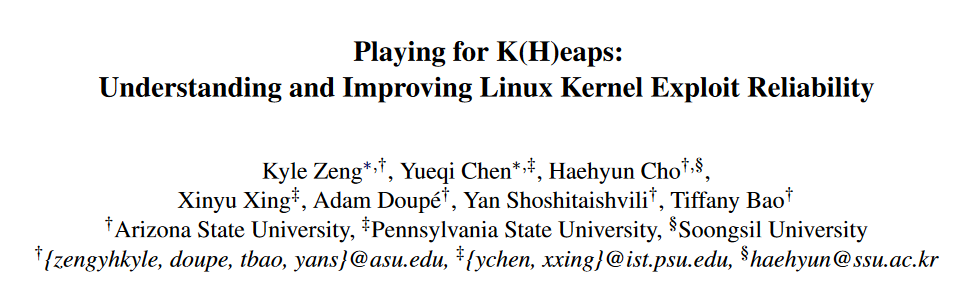
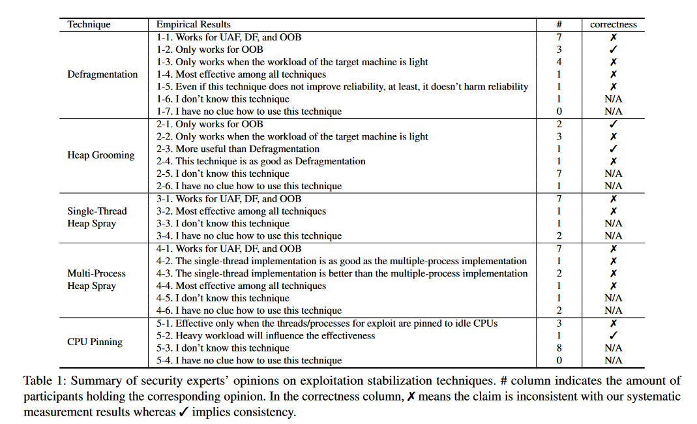
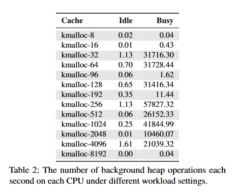
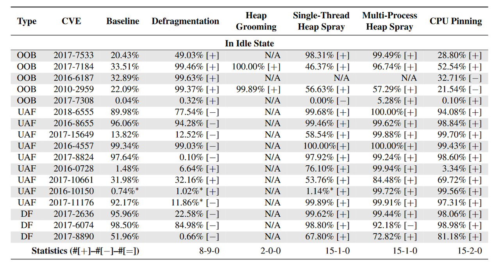
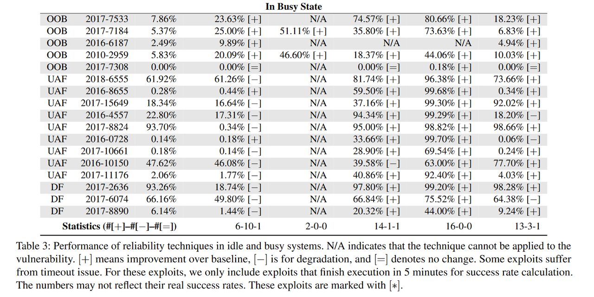
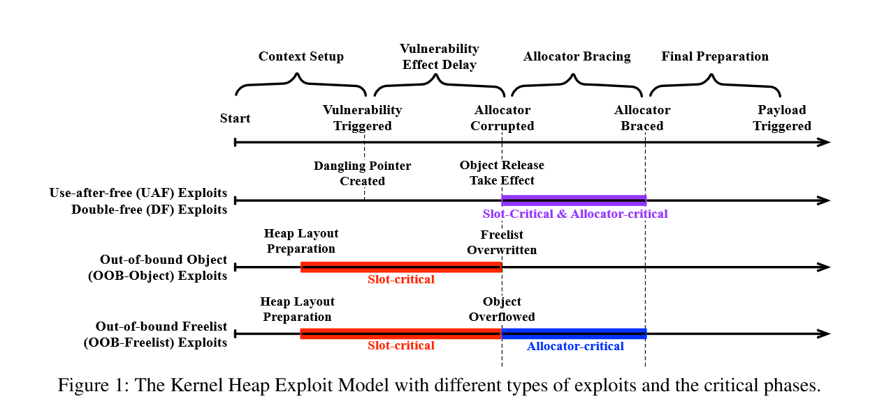
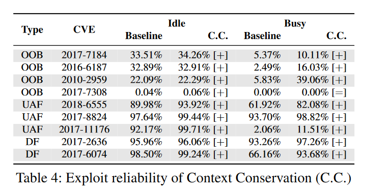
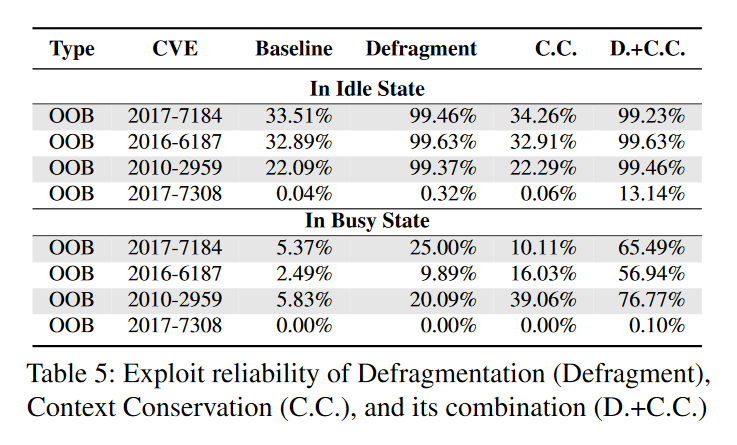
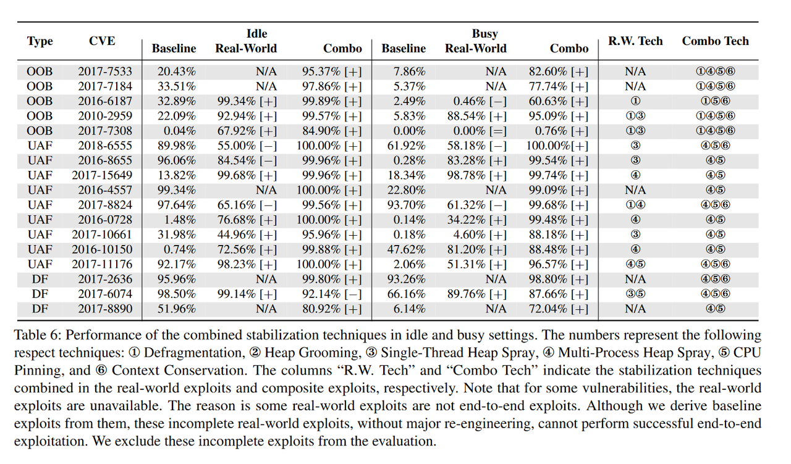

今天分享一篇来自Usenix Security '22的文章：Playing for K(H)eaps: Understanding and Improving Linux Kernel Exploit Reliability
Introduction
Linux内核由很多复杂的组件交错而成，类似用户态堆，这些组件动态分配管理内存的区域叫内核堆。内核堆和用户态堆一样也存在不少漏洞。也有不少攻击的手法，但是攻击者往往需要对内核堆的配置进行精确的预测和有效的控制。但内核组件往往以复杂且不可预测的方式影响实际的运行时堆布局，往往使其与攻击者所期望的布局有所不同。这种不可预测性导致了漏洞利用的失败，使Linux内核堆利用变得不可靠。
这种复杂性一方面可以保护内核的安全。另一方面对于漏洞的识别、分类以及复现都造成了困难，开发者可能会因此忽略一些潜在的漏洞而导致其他bug的触发。
本文作者旨在通过研究和开发提高内核漏洞利用可靠性的技术来解决这一问题，以帮助正确地展示潜在漏洞的影响和重要性。
作者的研究工作主要在于回答以下问题：
1、常见的堆利用稳定技术有哪些？
2、使用这些技术的专家意见是什么，在真实世界的评估结果是什么?这些专家意见是否正确?
3、稳定技术成功/失败的原因是什么?
4、如何提高内核堆利用可靠性？
Background
Exploit-related Linux Kernel Design
Kernel Memory Allocator
Linux内核使用的堆管理器是SLUB，它为相同大小的内核对象创建一个cache，每个cache维护一个pages列表，每个page称作slab。每当一个新的slab被创建，它会被划分成多个大小相同的槽（后文我都称作slot），然后这些slots会链在一起形成一个"per-slab freelist"（空闲对象链表）。在一些堆操作后这些per-slab freelist会被整理和随机化，但新的freelist的布局是确定的。
在运行时，每个CPU运行在不同的slab上，以避免竞争。CPU使用的slab的freelist通常被称为per - CPU freelist。当一个CPU分配一个对象时，它从它的per - CPU freelist中为该对象取一个slot。当对象被释放时，分配器确定对应的slab，并将对象的slot返回到slab的per-slab freelist中。
Task Scheduler
Linux内核使用完全公平调度器( Completely Fair Scheduler，CFS )调度进程，它以线程为粒度调度进程并称它们为task。它跟踪所有在就绪队列中运行的任务。在多核系统中，每个CPU维护其每个CPU的就绪队列，并记录就绪队列中的工作负载。当CPU上的负载不均衡时，内核会将任务从高负载的就绪队列迁移到低负载的就绪队列上。
Context Switch
一个CPU一次只能执行一个任务。当调度器告诉CPU停止当前任务并运行另一个任务来模拟并发执行时，会发生上下文切换。当用户空间进程发生时，该进程将被停止，等待恢复。由于Linux内核是抢占式的，在运行的进程中随时可能发生上下文切换。
Exploitation Methods
主要有四种利用手法：
Out-of-bounds Object (OOB-Object) Exploits：主要是堆溢出导致的越界攻击，篡改相邻对象的指针和vtable等。
Out-of-bounds Freelist (OOB-Freelist) Exploits：由越界导致的freelist劫持
Use-after-free (UAF) Exploits：free了但是slot还在堆空间上，向slot再写入可控地址进行UAF
Double-free (DF) Exploits：和用户态Double free类似。
Exploitation Unreliability Issue
这部分主要讲的就是利用的不可靠性和以往的利用稳定性技术没有人研究和评估。
Kernel Heap Exploit Reliability Interview
作者首先邀请了11位Linux kernel安全方面的专家进行采访，提供了五种大多数安全研究员使用的内核利用的稳定性技术，如Table 1所示，它们是从公开的论坛和write up种总结出来的。作者还在这几种技术后边记录了在各种条件下能否生效。

有趣的是，由于本次访谈涉及人类受试者，作者还将实验提交给了IRB(伦理审查委员会)，并获得了豁免。
Stabilization Techniques
根据采访总结出了五种稳定技术：
1、Defragmentation：将大量对象分配到漏洞对象的同一个cache中，来填满slabs，强制让分配器创建新的slabs
2、Heap Grooming：创建一种 漏洞对象正好挨着victim对象的布局，这样子的布局对于一些堆利用会有好处。要实现这种布局，做法是先分配很多victim对象，然后与将其中一个victim与漏洞对象通过快速free和malloc进行交换
3、Single-Thread Heap Spray：在单线程通过分配大量对象来占据目标slot。通常在UAF/DF触发后或者OOB触发前使用。
4、Multi-Process Heap Spray：类似单线堆喷，在多线程进行堆喷。
5、CPU Pinning：将exp的执行进程挂到特定的CPU核上来防止任务迁移到另一个核。可以通过sched_setaffinity系统调用实现。
Interview Response
Interview结果在上面的Table 1
作者总结出了以下三点：
1、大多数专家(大约有一半或一半以上)对Defragmentation、单线多线堆喷等稳定技术持有相同的观点。也就是说，这些技术可以增加针对任意堆漏洞的漏洞利用的可靠性。
2、虽然采访对象都有2年多做针对Linux内核漏洞的端到端漏洞利用的经验，但大多数人并不熟悉诸如Heap Grooming和CPU Pinning的漏洞利用稳定技术。
3、小部分专家对一些稳定技术持有不同观点，这些矛盾的观点表明，内核利用专家对这些常用技术存在不同理解。需要进行系统的实验来总结相应技术有效的条件。
Evaluating Stabilization Techniques
这一部分首先介绍了如何评估利用稳定化技术的有效性。其次展示了他们的评估结果。第三，将评估中的发现与人类专家对利用稳定技术的意见进行了比较。最后手工分析了每个漏洞利用的运行时行为，并总结了影响漏洞利用可靠性的因素
Experiment Setup
作者设置了一个综合实验。首先构建了一个由真实漏洞组成的数据集。其次，根据受访者提供的建议，针对每个漏洞利用每种稳定化技术的变种。第三，开发了一个评估平台，在该平台上运行公开的漏洞利用和相应的变种，从而衡量每个漏洞利用的成功率。最后，对实验结果进行了成功率的比较和分析。
Dataset
作者收集了一个包含17个Linux内核漏洞和相应公开漏洞的数据集。覆盖了内核堆上所有常见的漏洞类型。该数据集是目前所知最广泛的Linux内核工作语料。然后进行以下筛选：
1、公开的exp能劫持程序流，说明利用是成功的
2、可以反向移植到v4.15内核，并且它们的相应漏洞经过轻微修复后仍然保留了在新内核上获取控制流劫持程序流的可能。这排除了不同内核版本引入的可靠性差异。
3、不依赖特殊的硬件或模拟器来触发，便于实验
Exploit Variants
首先，通过剥离已经在公开漏洞利用中实现的稳定技术来构建基线漏洞利用（baseline exp）
然后对单独的利用添加稳定技术（来自采访参与者的建议），设计利用变体，确保每个变体只含一种稳定技术
在漏洞变体构建过程中，将对基线漏洞的修改保持在最小程度，以避免漏洞结构变化对可靠性造成的意外影响。最终获得了102个可供评估的漏洞
Experiment Design
作者搭建了一个评估平台，可以自动运行所有针对漏洞的exp，并收集panic日志来判断漏洞利用是否成功
该平台可以评估空闲或繁忙系统下的漏洞利用，以衡量系统负载对漏洞利用可靠性的影响
通过跑Apache benchmark（来自Phoronix Test Suite）来模拟繁忙的系统，产生了超过10个进程和150个线程，不断地在所有CPU上占据81.24 %的CPU使用率，并对内核堆施加了密集的压力。两种系统中后台的堆操作如下

每个漏洞运行5000次，然后计算成功率。
Effectiveness Evaluation
结果如Table3：


图中展示了每个CVE在不加任何稳定技术时候的baseline的成功率和加上之前提过的Heap Groomming，CPU pinning等技术之后的成功率。
观察到结果是
每个漏洞至少都有一种稳定技术能用于提升成功率。
而且发现Defragmentation这个技术对利用稳定性的提升最小，平均只有%6~8%
同时发现除了CPU pinning之外的四种技术对于OOB漏洞利用的提升最大，因为这四种技术都可以减少内核堆的分布动态性，并创造干净的堆环境来进行漏洞利用。但是这四种技术没有一个能主宰（不知道用这个词合不合适）OOB漏洞利用稳定性，尽管Defragmentation 和 Heap Grooming在空闲系统中对OOB表现非常好，但在繁忙系统中却又稍显逊色。多线堆喷则在空闲和繁忙系统中都对一些OOB漏洞利用有显著提升（但有个别并不支持，或者效果很弱，因此也是无法主宰OOB）
单线堆喷和多线堆喷二者对UAF、DF利用稳定性提升都很大，无论是在空闲的系统还是在繁忙系统中。原因是堆喷会创造大量堆块，提升进入freed slot中的概率。
以CPU pinning这种技术在idle和busy系统中的差异为例，可以看出空闲系统中稳定性技术的效率更高。
Comparison with Expert Opinions
将Table 1和Table 3中的结果进行比较，发现了受访者的一些不太正确的观点
1、前面提到专家认为Defragmentation可以对任意堆利用有有效的提高，但实验表明无论是在空闲还是繁忙的环境中，Defragmentation对OOB更有效，而其他的比如DF,UAF提高则没有非常显著。
2、专家认为繁忙的系统会对很多技术造成不良影响（Table1中的1-3、2-2、5-2）。这里的技术应该是包括了利用技术和稳定技术。而实验表明，漏洞利用技术确实在繁忙系统中会收到不利的影响，但稳定技术则依旧有显著的提升效率。
3、专家对于哪种稳定技术最有效的观点各异（Table1中的1-4、2-3、2-4、4-4）。实际上对此并没有一个通用的答案。每个case的最佳稳定技术是不一样的。此外，对于两种堆喷方式来说，多线堆喷总体表现比单线堆喷更出色。
以上三点之外还有一些观点反驳，这里不过多记录了
Summary of Exploit Unreliability Factors
这块记录了导致利用不可靠性的因素，我简要记录下
1、堆布局未知
2、不必要的任务迁移
3、意外的堆使用
4、不可预测的Corruption Timing
Kernel Heap Exploit Model
作者将内核所有堆利用的过程抽象成利用模型

该模型由四个阶段组成：
- 上下文设置（Context Setup）：在这个阶段，攻击准备触发目标漏洞所需的上下文，例如分配一个易受攻击的对象。在这个阶段，可以使用一些内核堆稳定技术来减轻不可靠性因素（例如，未知堆布局），从而提高利用的可靠性。
- 漏洞效应延迟（Vulnerability Effect Delay）：在这个阶段，攻击触发漏洞，但是堆布局可能不会立即发生变化。例如，在UAF、DF漏洞，当对象被释放后，Linux内核可能会因为read-copy update (RCU)操作延迟释放。我们称从漏洞被触发到相应的堆操作生效的这段时间为漏洞效应延迟（vulnerability effect delay）。在这个阶段，对于UAF和DF漏洞利用，易受攻击的对象会被释放，其他任务可能会竞争获取该对象的槽位。对于越界访问对象（OOB-Object）和越界访问自由链表（OOB-Freelist）的漏洞利用，这个阶段发生在漏洞触发操作生效之前，因为OOB漏洞利用在漏洞触发操作生效之前会分配易受攻击的对象。
- 内存分配器固化（Allocator Bracing）：在堆操作生效后，内存分配器可能会处于损坏状态，尤其是在UAF、DF和OOB-Freelist漏洞利用中。在这种情况下，攻击必须在内核检测到异常并引发崩溃之前，从损坏状态中恢复内存分配器，否则攻击就会失败。
- 最后准备（Final Preparation）：在这个阶段，不稳定的堆操作完成。一些漏洞利用将执行最后的准备工作（例如，修改有效载荷对象），以获取控制流劫持的基本组件。
还提到了两种关键阶段，它们可能包含不可靠性因素： - 槽位关键阶段（Slot-critical Phase）：这个阶段从目标slot打开开始，到slot被目标对象填充结束。在这个阶段，目标slot可能被其他任务的对象占用。对于UAF和DF漏洞利用，这个阶段发生在漏洞触发操作生效之后，因为易受攻击的对象将被释放，并且其他任务可能会竞争获取该slot。对于OOB-Object漏洞利用和OOB-Freelist漏洞利用，这个阶段发生在漏洞触发操作生效之前，因为OOB漏洞利用在漏洞触发操作生效之前会分配易受攻击的对象。
- 分配器关键阶段（Allocator-Critical Phase）：在这个阶段，由于漏洞利用的操作，分配器处于损坏状态。这对于攻击的成功至关重要，因为内核在尝试使用分配器时可能会检测到异常并引发崩溃。一个成功的利用应该能够在内核发现异常之前从损坏状态中恢复分配器。与槽位关键阶段类似，这个阶段在不同类型的漏洞利用中发生在不同的阶段。
Exploit Stabilization Success and Failure
结合上文提出的模型各个阶段，作者回顾了实验结果并调查了每种技术的成功/失败的原因。
Defragmentation：碎片整理用在set context阶段，通过耗尽当前的每个CPU的freelist，并填充所有半满的slab，以强制创建具有确定性布局的新的freelist。对于需要易受攻击对象与目标对象相邻的OOB漏洞利用来说，确定性的freelist布局显著增加了在正确位置放置两个对象的可能性，提高了利用的可靠性。但对于不需要特定堆布局的UAF和DF漏洞利用来说，这种技术可能不会提高可靠性，甚至在某些情况下会降低可靠性。
Heap Grooming：类似于Defragmentation，heap grooming也在set context阶段工作，减轻不可靠性因素（未知堆布局），提高OOB漏洞利用的可靠性。
Single-Thread Heap Spray：通过喷射大量有效载荷对象，穷举搜索堆中的目标slot，从而减轻未知堆布局、意外堆使用和不可预测的Corruption Timing等多个不可靠性因素。单线程堆喷射可以显著提高大多数情况下的利用可靠性，但如果在喷射过程中出现意外分配或不想要的任务迁移，则仍有可能失败。
Multi-Process Heap Spray：在保留单线程堆喷射的优势的同时，针对单线程堆喷射的弱点进行改进。该技术占用所有CPU的运行队列（runqueue），使其他进程无法被调度，从而减轻了意外分配和不想要的任务迁移的问题。然而，多进程堆喷射会增加上下文切换的机会，可能导致更多的内核自身的意外堆使用，因此在一些情况下可能导致利用的可靠性下降。
CPU Pinning：通过强制使攻击进程在特定CPU上运行，使其始终使用同一CPU的自由链表，从而有效地解决了由任务迁移引起的目标slot获取问题，显著提高了利用的可靠性。
New Technique and Compositions
利用模型更好理解了以往的稳定技术。并且作者还创造了一种新的稳定技术–Context Conservation，以及一系列提高可靠性的稳定技术的组合。
Context Conservation
在上文提到过的两个关键阶段中如果发生了上下文切换（context switch），就容易导致利用失败。
作者提出的新的稳定技术就旨在避免关键阶段的上下文切换。
Context Conservation由两部分组成
首先，它从关键阶段移除或重定位不必要的代码。在关键阶段，上下文设置、调试甚至睡眠调用的代码很常见。这些不必要的代码片段延长了关键阶段，增加了上下文切换的机会，从而损害了漏洞利用的可靠性。通过删除或重定位不必要的代码，可以缩短关键阶段，从而降低上下文切换发生在关键阶段的可能性。
其次它在攻击进程中注入一个stub来预测何时可以获得新的时间片(fresh time slice)。根据这个信息，可以将新的时间片专门用于关键阶段，避免关键阶段跨越多个时间片。这个设计可以进一步降低关键阶段中发生上下文切换的可能性。
具体实现上，Context Conservation被设计为一个循环，其中运行一个程序段。在每次迭代中，程序段测量CPU的时间戳计数器（TSC）。如果在循环中没有发生上下文切换，那么每次迭代需要的周期数就会减少。否则，在特定的迭代中，程序段可能会观察到由CPU执行其他进程引起的很多周期。利用这个周期差异作为指标，安全研究人员可以将新的时间片分配给关键阶段，确保上下文切换不会对攻击的可靠性产生负面影响。
为了验证Context Conservation的新颖性，研究人员与专家进行了确认，并没有找到已有文献证明这种技术。然后，作者评估了Context Conservation在所有适用的漏洞上的表现，并与基准进行了比较。结果显示，Context Conservation在除了一种漏洞之外的所有漏洞上都优于基准，并与单个例外相等。另外，作者观察到Context Conservation对于Out-of-Bounds (OOB)攻击的可靠性改进效果不如对Use-After-Free (UAF)和Double-Free (DF)攻击的效果明显。因为OOB攻击的可靠性对于堆布局很关键，受害对象必须与有漏洞的对象相邻。虽然Context Conservation减少了由于上下文切换引起的堆布局变化，但堆布局仍然可能受其他因素的影响而改变。因此，Context Conservation不能显著改善OOB攻击的可靠性。

根据上述调查结果，作者提出了一个假设：将Context Conservation与碎片整理（Defragmentation）相结合将显著改善OOB攻击的可靠性，因为碎片整理可以帮助减轻其他因素导致的堆布局问题。作者验证了这个假设，并在表格5中展示了结果。可以观察到，Context Conservation和碎片整理的组合对于攻击的可靠性提升更明显。

Compositing Stabilization Techniques
基于上面提出的稳定技术组合的想法，作者将文中提到过的稳定技术进行组合，包括他们新提出Context Conservation，结果如下表

由于某些漏洞触发条件的限制，选择的4种技术组合不能适用于所有漏洞。对于这样的情况，作者排除相应的稳定方法，只保留适用的方法。
与baseline漏洞利用的成功率相比，组合方法提高了135.53%的攻击可靠性（baseline：38.61% vs. composition method：90.94%）。这表明组合方法可以是一种有效的方法，用于提高对几乎任意漏洞的攻击的稳定性。从表格中还观察到，通过组合方法增强的攻击相对于现实世界的攻击也在攻击成功率方面表现出色（real world：54.30% vs. composition method：91.15%）。在这项研究中，我们从互联网上收集了这些现实世界的攻击。这些攻击是由专业的安全研究人员创建的。因此，相对于现实世界的攻击的优越性意味着从系统研究中得出的稳定方法比安全从业人员常用的临时方法更能提高攻击的稳定性。
作者对CVE-2016-10150的攻击进行了调查，以理解为什么组合技术在繁忙系统中显著提高了其稳定性。在这个攻击中，由于漏洞的性质，攻击线程和喷洒线程（spray thread）必须保持不同。由于攻击线程和喷洒线程都要进行密集的工作，Linux内核会将它们都标记为重型任务，并将其中一个迁移到另一个CPU进行负载平衡，这会损害攻击的可靠性。我们的调查显示，这也是为什么单线堆喷在这个CVE中表现比基准漏洞差的原因：它的喷洒线程执行的工作更密集，与基准相比更容易被迁移。CPU Pinning强制这两个线程运行在同一个CPU上，从而避免了不必要的迁移，并显著提高了稳定性（如Table3）。将多线堆喷与CPU pinning结合，增加了命中目标slot的机会，并进一步提高了稳定性。
组合方法未能改善CVE-2017-6074在空闲环境中的利用的稳定性。在繁忙环境中，组合方法增强的攻击优于baseline。然而，它的稳定性改善程度低于现实世界的攻击。为了理解这种结果的原因，作者手动检查了两种攻击。发现与作者早期的结论一致——多线堆喷是一把双刃剑：在空闲环境中引入了不必要的额外负载，损害了baseline漏洞利用的稳定性。相反，在繁忙环境下，虽然多进程堆喷会带来额外的负载，对攻击的可靠性产生负面影响，但它也减轻了其他进程所施加的负载影响，在一定程度上提高了baseline的稳定性。这解释了为什么使用单线堆喷的现实世界攻击表现出更好的稳定性改善效果。
Summary
Linux内核堆的动态布局增大了利用难度。尽管过去已经有不少利用手法，但是很少有人去评估它们的有效性和利用条件。在这篇论文中，作者系统地研究了内核堆利用的可靠性问题。首先收集了常用的稳定技术以及内核利用专家在这方面的意见。然后在17个真实的内核堆利用上评估了这些稳定化技术。结果表明内核安全专家们提出的观点很多是不正确的。为了帮助安全社区更好地理解利用稳定性，作者检验了实验结果，并抽象了一个通用的内核堆利用模型，使用提出的利用模型来解释利用的不可靠性问题，并分析稳定技术成功或失败的原因。还利用该模型提出了一种新的利用技术Context Conservation。实验表明，新的稳定技术使Linux内核利用的可靠性平均提高了14.87 %。将新提出的技术与现有的稳定化方法相结合，产生了一种复合稳定化方法，平均实现了135.53 %的攻击可靠性提升，比专业安全研究人员的攻击稳定化性能提升了67.86 %。
论文地址：https://www.usenix.org/conference/usenixsecurity22/presentation/zeng
如果您喜欢此博客或发现它对您有用，则欢迎对此发表评论。 也欢迎您共享此博客，以便更多人可以参与。 如果博客中使用的图像侵犯了您的版权，请与作者联系以将其删除。 谢谢 ！